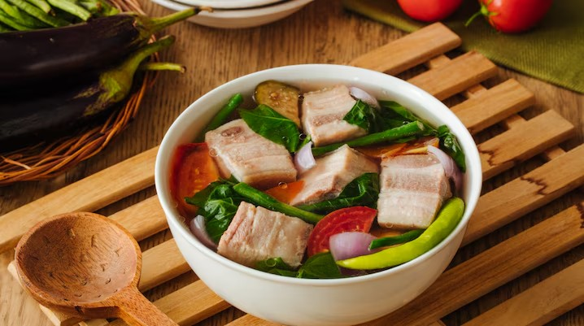

Home
Sinigang na Baboy

Description
Sinigang is a sour soup that a lot of people consider just as much a national dish as adobo.
This version is made with pork ribs simmered until tender in a broth soured with tamarind, then
loaded with vegetables like kangkong, radish, eggplant, and string beans. It's the kind of dish
that's perfect on a rainy day, served with rice and a small dish of fish sauce and chili on the
side for dipping the meat.
Ingredients
- 1 kg pork ribs or pork belly, cut into chunks
- 8 cups water
- 2 tomatoes, quartered
- 1 onion, quartered
- 1 pack tamarind soup base (sinigang mix), or fresh tamarind pulp
- 1 radish, sliced
- 1 eggplant, sliced
- 1 bunch string beans (sitaw), cut into 2-inch pieces
- 1 bunch kangkong (water spinach)
- 2-3 finger chilies
- Fish sauce (patis) and salt, to taste
Steps
- Place the pork in a large pot with the water and bring to a boil, skimming off any scum that rises to the top.
- Add the tomatoes and onion, then lower the heat and simmer for about 1 hour, or until the pork is tender.
- Stir in the tamarind soup base (or strained fresh tamarind juice) until dissolved.
- Add the radish and let it cook for a few minutes until slightly softened.
- Add the eggplant, string beans, and chilies. Simmer for another 3-5 minutes.
- Season with fish sauce and salt to taste.
- Add the kangkong last and cook for about a minute, just until wilted.
- Serve hot with steamed rice and extra fish sauce on the side.
Home